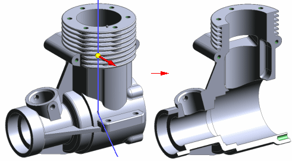

Section command (Part, Sheet Metal, and Assembly)
Section command (Part, Sheet Metal, and Assembly)
The Section command:
-
Simulates the removal of material from an assembly, part, or sheet metal model by cutting away a portion of the model so that you can see internal features.
-
Supports product manufacturing information requirements, so that you can add 3D annotations and dimensions to the cutaway views.

-
In an assembly, specifies the parts from which you want to remove material.

The Section command:
-
Is not available when you in-place activate an assembly.
-
Differs from the Section View command that is available only in the Draft environment.
These tools are used to define and edit a 3D section view:
-
Section command bar defines and modifies the section profile and extent.
-
Section Options dialog box specifies the section view dimension style and cutting plane annotation properties.
-
Section Display Options dialog box controls whether the section annotation is displayed and selects which cut parts are displayed.
How do I
Create a 3D section view (synchronous environment)Create a 3D section view (ordered environment)
Edit a 3D section view
Apply or remove a section cut
Expose a 3D section in a drawing
Create a section view using non-associative planes
Create a section view using associative planes
Learn more
3D section views of modelsLook up more details
3D section view editing commandsProperties command (3D section views)
Section Display Options command (3D section views)
Section Display Options dialog box
Section Options dialog box (3D sections)
Section command bar (synchronous environment)
Section command bar (ordered environment)
Edit Profile command (3D section views)
Section by Plane command
Section by Plane command bar
Section by Plane Options dialog box